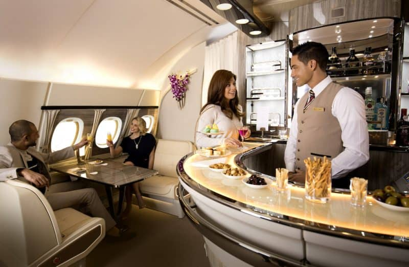

As you take in the sights, smells, and sensations of a new destination, you're doing more than making memories. Travel experiences are known to prompt your brain to think differently and more creatively too!
Travel Can Strengthen Your Heart
Tourism Keeps the Economy Churning
Travel Makes You Smarter
Paid Vacations Vary By Country
France is the Top Travel Spot
The Longest Flight Was Around 30 Hours
The Shortest Flight Can Take Under a Minute
You Won’t Rub Elbows in Greenland
More Than 20 Million People Travel by Train in India
The Most Expensive Airport Taxi Is $235
Atlanta’s Hartsfield-Jackson Airport Is the World’s Busiest
What is the best plane for long flights?

Airliners. The longest range jetliner in service is the Airbus A350 XWB Ultra Long Range, capable of flying up to 18,000 km (9,700 nmi). The A380 is capable of flying 14,800 km (8,000 nmi) with 544 passengers. The A350-900 can fly 15,000 km (8,100 nmi) with 325 passengers.